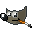
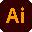

Hey there, I'm Tea.
When I first got my hands on a PC, I quickly got obsessed with creating digital spaces for others to experience.
At first I made expansions to existing games (like Portal 2 maps) that soon became tiny speculative full-immersion mods without relating to the original. My workflow is rapid prototyping, throwing ideas at a wall until something sticks.
I love breaking the boundaries of what you can call a game. My games have been described as calm, contemplative and always with a point to them. Most of my many projects are for short game jams or university. I study Intermedia Design and also experiment with other media like film and graphic design.
Wanna work together? 
I work with


← experienced beginner →
Quotes
Shards of colour paint themselves upon the void, rooms collapse inwards upon themselves. Broken, haunting, brilliant stuff.
—RockPaperShotgun, Natalie Clayton
What a wunderful, short, reflective experience.
—Moshe Linke, game architect
a surreal puzzle game- experimental, mysterious, and beautiful!
—Michelle aka NovaHeart
definitely worth your time
—Twinfinite
Exhibitions
(upcoming) Unannounced Project
The Elision Effect exhibit at Play!con
The Elision Effect exhibit at Gamescom
(in)stabilitea exhibit at Play!con
(in)stabilitea exhibit at Gamescom
Features
Talk about The Door Problem at GPN22, based on an article by Liz England
The Elision Effect released in the Indiepocalypse (itch.io)
3rd place out of 28 entries in Map Labs AT4 TUNE with Empteaness
2nd best score of 19 entries in Map Labs 9 Back on Track with (in)stabilitea
2nd place out of 13 entries in Map Labs TT5 Blockout with twisted_gravitea_
When I first got my hands on a PC, I quickly got obsessed with creating digital spaces for others to experience.
At first I made expansions to existing games (like Portal 2 maps) that soon became tiny speculative full-immersion mods without relating to the original. My workflow is rapid prototyping, throwing ideas at a wall until something sticks.
I love breaking the boundaries of what you can call a game. My games have been described as calm, contemplative and always with a point to them. Most of my many projects are for short game jams or university. I study Intermedia Design and also experiment with other media like film and graphic design.
Wanna work together?
← experienced beginner →
Quotes
Shards of colour paint themselves upon the void, rooms collapse inwards upon themselves. Broken, haunting, brilliant stuff.
—RockPaperShotgun, Natalie Clayton
What a wunderful, short, reflective experience.
—Moshe Linke, game architect
a surreal puzzle game- experimental, mysterious, and beautiful!
—Michelle aka NovaHeart
definitely worth your time
—Twinfinite
Shards of colour paint themselves upon the void, rooms collapse inwards upon themselves. Broken, haunting, brilliant stuff.
What a wunderful, short, reflective experience.
a surreal puzzle game- experimental, mysterious, and beautiful!
definitely worth your time